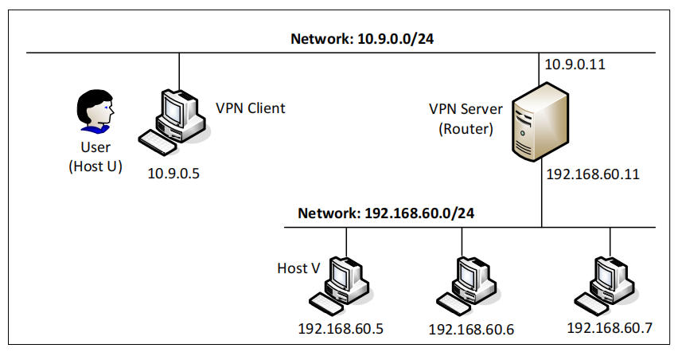
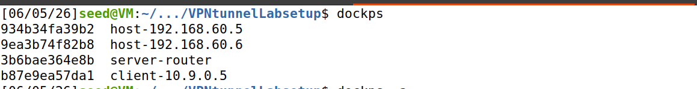
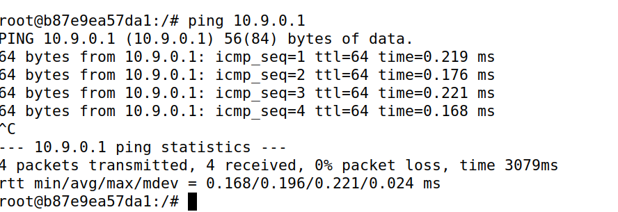
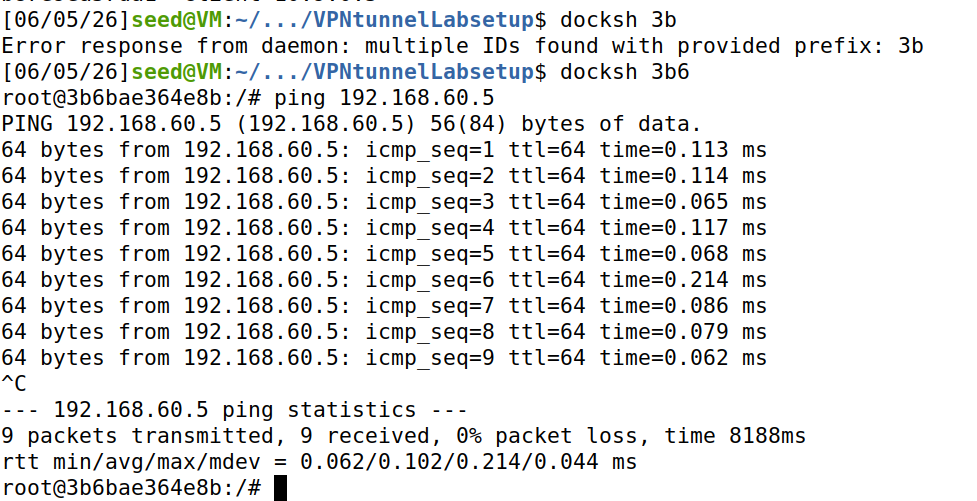
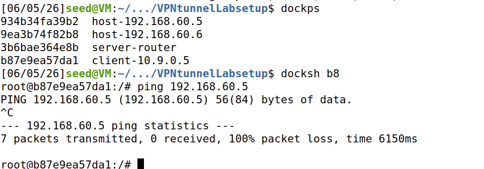
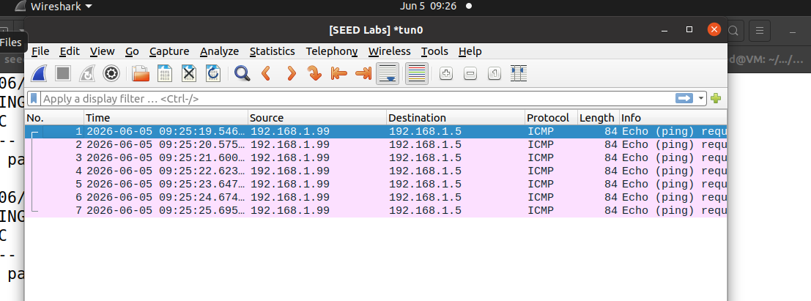

VPN 隧道实验¶
实验目的¶
- 理解VPN隧道的基本原理及实现方法。
- 掌握使用Docker搭建网络环境和配置虚拟网络接口的技能。
- 掌握TUN/TAP设备的创建与配置。
- 理解并实现IP数据包的封装、发送与接收过程。
- 能够通过抓包工具验证隧道通信的有效性和数据包流向
实验任务¶
使用socat构建基于TUN的虚拟网络¶
- 网络拓扑图


- 主机 U 可以与 VPN Server 通信。
进入主机u容器ping VPN服务器

- VPN Server 可以与主机 V 通信。

- 主机 U 不能与主机 V 通信。

- 在路由器上运行 tcpdump，并嗅探每个网络上的流量
-
网络拓扑说明 | 角色 | 身份 | 关键接口 | 作用 | |------|------|----------|------| | 主机U | VPN 客户端 | tun0（虚拟）+ eth0（真实） | 发起请求，把原始包封装进隧道 | | VPN服务器 | 网关/转发器 | tun0（虚拟）+ eth0（真实） | 解封装 + 转发到私网 | | 主机V | 私网内目标主机 | eth0 | 接收请求并回复 |
- 流程图
-
使用socat生成TUN设备
-
抓包分析

完成创建和配置 TUN 接口实验¶
通过隧道将 IP 数据包发送到 VPN 服务器¶
设置 VPN 服务器¶
处理双向流量¶
实验总结¶
问题与思考¶
知识点¶
-
UN/TAP 虚拟网络接口是什么 Linux 内核提供的纯软件实现的网络接口，一端连着内核网络协议栈，另一端连着用户态程序。 什么时候用TUN，什么时候用TAP | 场景 | 推荐 | 原因 | |------|------|------| | 点对点 VPN（本实验） | TUN | 简单，只关心 IP 层，不需要处理 MAC 和 ARP | | 需要桥接两个局域网 | TAP | 要传递 ARP、广播等二层流量 | | 移动设备 VPN（如手机连公司） | TUN | 点对点，不需要二层 | | 虚拟机能通过 VPN 被访问 | TAP | 要让虚拟机像在本地一样收到 ARP |
数据流向： - 内核 → 用户程序：路由表决定某类包走 TUN 接口 → 内核交给 TUN 设备 → 用户程序 read() 拿到原始 IP 包 - 用户程序 → 内核：用户 write() 一个 IP 包到 TUN 设备 → 内核就像从网卡收到包一样处理它（路由、转发、响应） 2. 隧道（Tunneling）是什么： 把一个网络协议的数据包，整个装进另一个协议的负载里传输。 3. 路由控制（Routing） 为什么需要： 操作系统不知道哪些流量应该进 TUN 隧道，必须手动告诉它 核心命令：
4. IP over UDP 封装 为什么用 UDP： - 简单、无连接、适合封装 IP 包。TCP 会引入额外重传和延迟。 封装格式（从内到外）： 5. 双向转发与 I/O 多路复用（select） 问题： VPN 程序需要同时处理两个方向的数据： 解决方案：select() 系统调用 它同时监控多个文件描述符（TUN 和 socket），只要任何一个有数据，就返回并告诉你是哪个 6. IP 转发（IP Forwarding）让一台 Linux 机器像路由器一样，在不同网卡之间转发 IP 包。
为什么 VPN 服务器需要： 它一边连接互联网（与客户端通信），一边连接私有网络（与主机V通信）。收到来自隧道的包后，必须能转发给主机V。 开启命令（实验环境已默认开启）：
7. socat是什么socat 是一个强大的网络瑞士军刀，名字来源于 "SOcket CAT"。你可以把它理解为 netcat 的超级增强版，功能更强大，能连接几乎任何两个数据源
socat 可以在两个数据通道之间建立双向数据传输连接。 - 两个通道可以是：文件、管道、设备（如 TUN）、TCP 连接、UDP 连接、SSL 连接、Unix socket 等 - socat 常见用法示例 | 用途 | 命令 | |------|------| | 监听 TCP 端口转发到另一个端口 |
socat TCP-LISTEN:8080,fork TCP:localhost:80| | 建立双向 UDP 隧道 |socat UDP-LISTEN:9090,fork TUN:192.168.53.1/24,up| | 将串口数据转发到网络 |socat /dev/ttyUSB0 TCP:server:1234| | 加密传输 |socat OPENSSL-LISTEN:443,cert=server.pem TCP:localhost:80|---